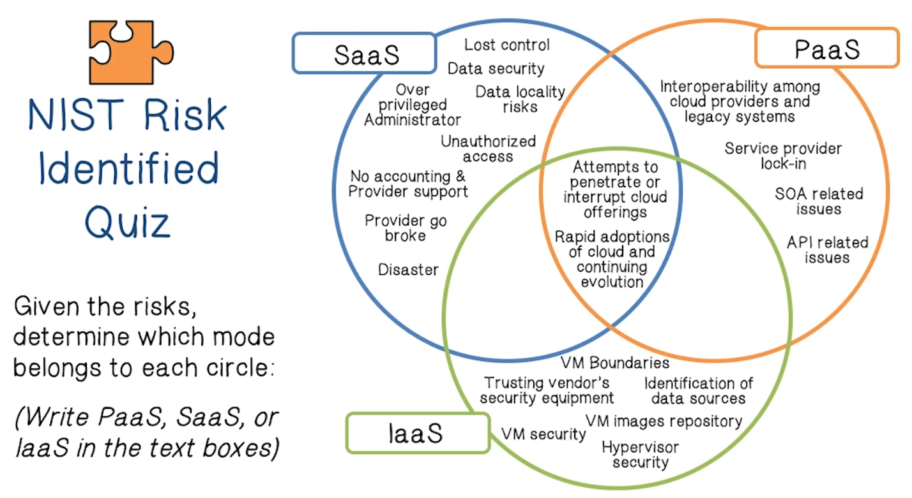
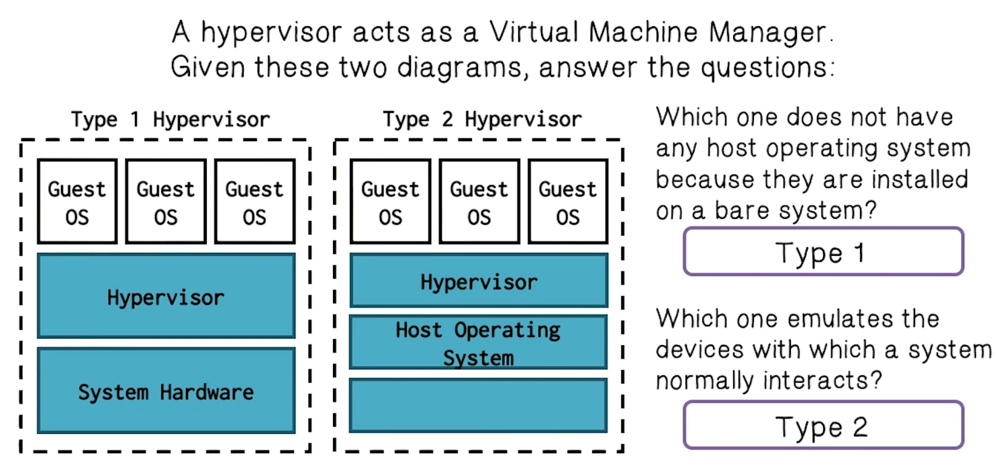
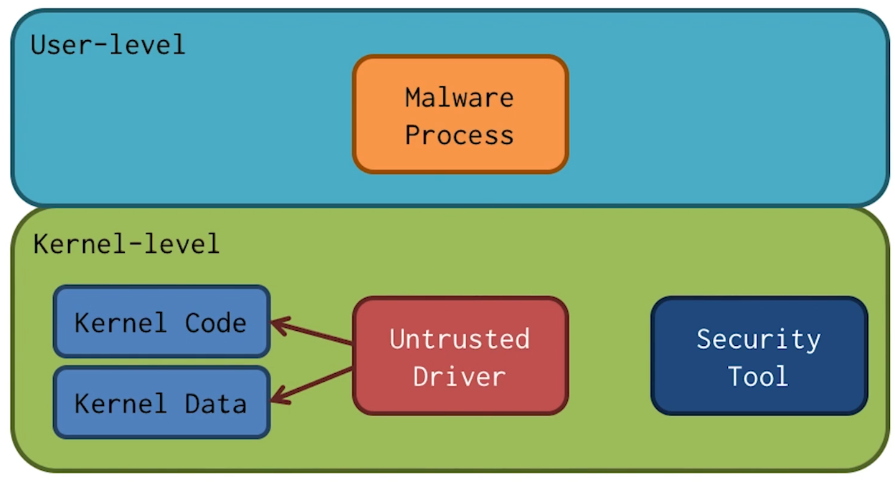
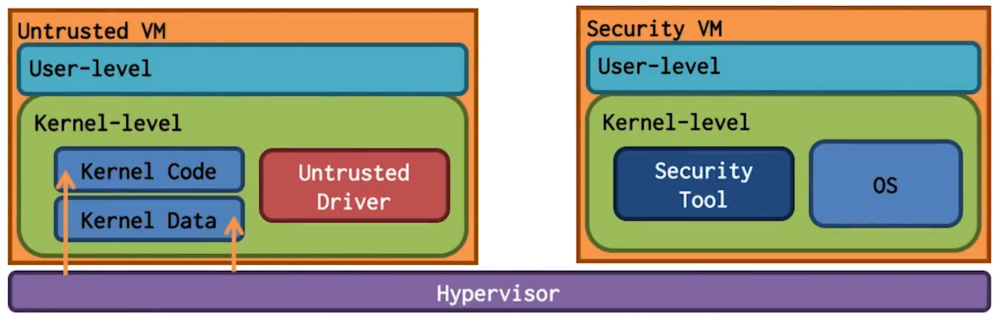
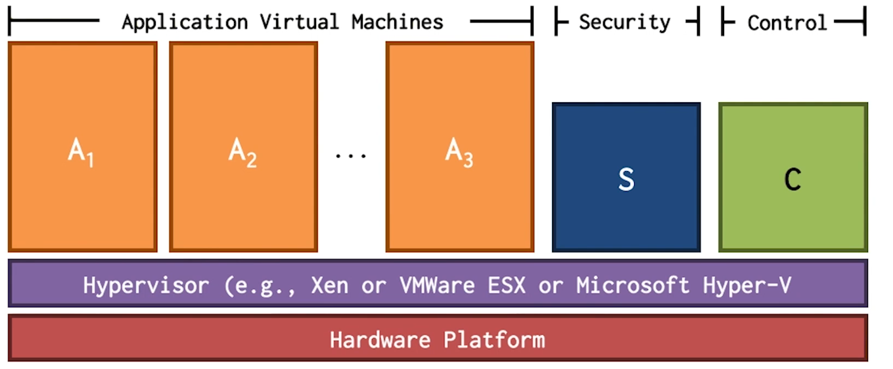
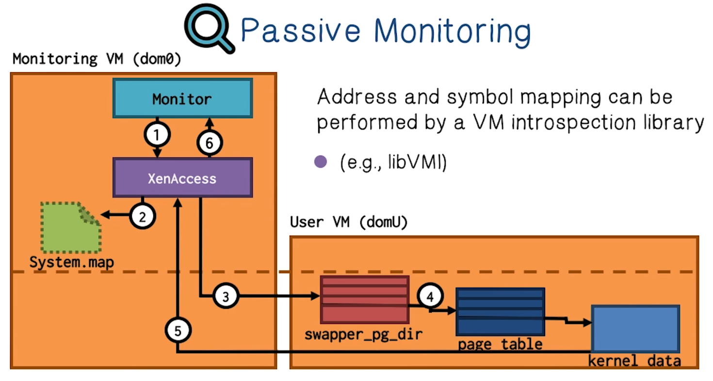
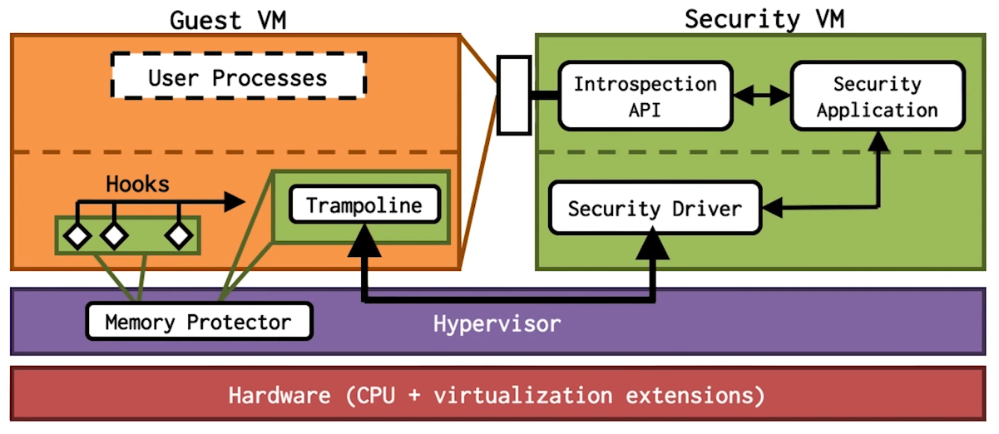
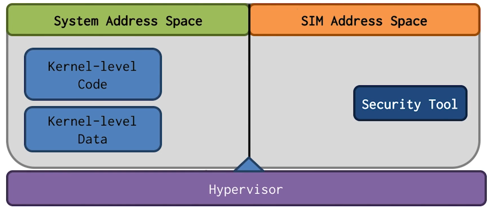
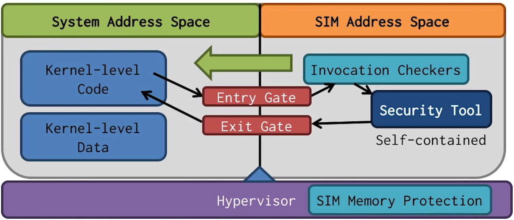
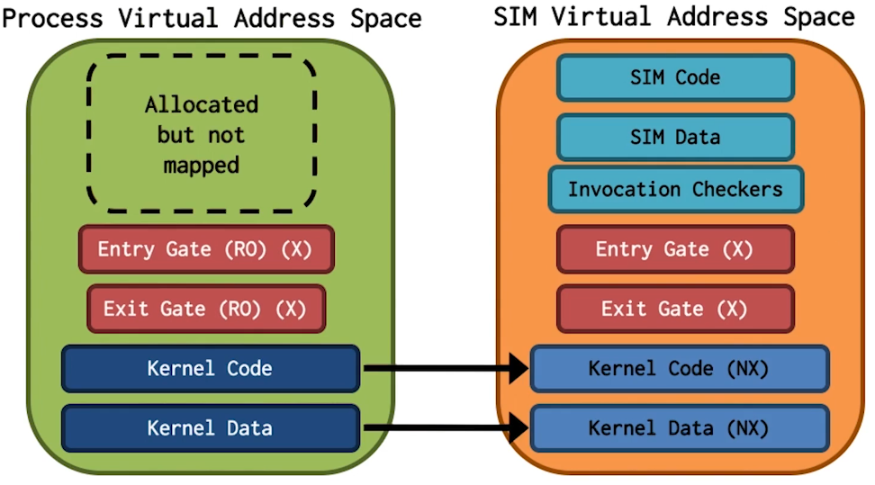

NetSec Lecture Notes - Lesson 12 - Cloud Computing - VM Monitoring
Cloud Computing - VM Monitoring
- Definition of cloud computing: a model for enabling convenient, on-demand network access to a shared pool of configurable computing resources (e.g. networks, servers, storage, applications, and services) that can be rapidly provisioned and released with minimal management effort or service provider interaction
- Note: the cloud computing industry represents a large ecoystem of many models, vendors, and market niches. This definition attempts to encompass all of thevarious cloud approaches
Cloud Characteristics Quiz
Given our definition of cloud computing fill in the 5 essential cloud characteristics * On demand self service * Broad or wide network access * Resource pooling or sharing * Measured service * Rapid elasticity
Cloud Service Models
- Software As A Service
- Use the provider’s applications running on a cloud infrastructure
- Platform As A Service
- Consumer-created applications using programming languages and tools supported by the provider
- Infrastructure As A Service
- Capability provided to the consumer to provision processing, storage, networks, and other fundamental computing resources
Services Quiz
Given the definitions of SaaS, IaaS, PaaS determine the service category for each of the products listed
- Google Apps
- PaaS
- Amazon Web Services
- IaaS
- Salesforce
- PaaS
- Knowledge Tree
- SaaS
- Microsoft Azure
- IaaS
Cloud Deployment Models
- Private
- The cloud infrastructure is operated solely for an organization
- Community
- The cloud infrastructure is shared by several organizations and supports a specific community that has shared concerns
- Public
- The cloud infrastructure is made available to the general public or a large industry group
- Hybrid
- The cloud infrastructure is a composition of two or more clouds (private, community, or public)
Common Cloud Characteristics Quiz
List some of the characteristics that all four cloud models share according to the NIST framework
- Massive scale
- Homogeneity
- Virtualization
- Resilient computing
- Low cost software
- Geographic distribution
- Service orientation
- Advanced security technologies
NIST Risk Identified Quiz

Analyzing Cloud Security
- Key Issues
- Trust, multi-tenancy, encryption, compliance
- Clouds are massively complex systems
- Simple primitives and common functional units.
- Complexity largely comes from sheer scale
- Cloud security is a tractable problem
- There are both advantages and challenges
- Cloud security advantages
- Shifting public data to an external cloud reduces the exposure of the internal sensitive data
- Cloud homogeneity makes security auditing/testing simpler
- Clouds enable automated security management
- Redundancy / Disaster Recovery
- Cloud security challenges
- Trusting vendor’s security model
- Customer inability to respond to audit findings
- Obtaining support for investigations
- Indirect administrator accountability
- Proprietary implementations can’t be examined
- Loss of physical control
Security Relevant Cloud Components
- Cloud provisioning services
- Advantages
- Rapid reconstitution of services
- Enables availability
- Provision of multiple data centers
- Advanced honeynet capabilities
- Challenges
- Impact of compromising the provisioning service
- Advantages
- Cloud data storage services
- Advantages
- Data fragmentation and dispersal
- Automated replication
- Provision of data zones (e.g. by country)
- Encryption at rest and in transit
- Automated data retention
- Challenges
- Isolation management / data multi-tenancy
- Storage controller
- Single point of failure / compromise?
- Exposure of data to foreign governments
- Advantages
- Cloud processing infrastructure
- Advantages
- Ability to secure masters and push out secure images
- Challenges
- Application multi-tenancy
- Reliance on hypervisors
- Process isolation / Application sandboxes
- Advantages
- Cloud support services
- Advantages
- On demand security controls (e.g. authentication, logging, firewalls)
- Challenges
- Additional risk when integrated with customer applications
- Needs certification and accreditation as a separate application
- Code updates
- Advantages
- Cloud network and perimiter security
- Advantages
- Distributed denial of service protection
- VLAN capabilities
- Perimiter security (IDS, firewall, authentication)
- Challenges
- Virtual zoning with application mobility
- Advantages
- Elastic elements: Storage, processing, and virtual networks
- Advantages
- Challenges
Summary of Cloud Security Advantages
- Data fragmentation and dispersal
- Dedicated security team
- Greater investment in security infrastructure
- Fault tolerance and reliability
- Greater resiliency
- Hypervisor protection against network attacks
- Possible reduction of Certification and Accreditation activities (Access to pre-accredited clouds)
- Simplification of compliance analysis
- Data held by unbiased party (cloud vendor assertion)
- Low-cost disaster recovery and data storage solutions
- On-demand security controls
- Real-time detection of system tampering
- Rapid reconstitution of services
- Advanced honeynet capabilities
Summary of Cloud Security Challenges
- Data dispersal and international privacy laws
- EU Data Protection Directive and U.S. Safe Harbor program
- Exposure of data to foreign government and data subpoenas
- Need for isiolation management
- Multi-tenancy
- Logging challenges
- Data ownership issues
- Quality of service guarantees
- Dependence on secure hypervisors
- Attraction to hackers (high value target)
- Secuirty of virtual OSs in the cloud
- Possibility for massive outages
- Public cloud vs internal cloud security
- Lack of public SaaS version control
- Encryption needs for cloud computing
- Encrypting access to the cloud resource control interface
- Encrypting administrative access to OS instances
- Encrypting access to applications
- Encrypting application data at rest
- Issues with moving PII and sensitive data to the cloud
- Privacy impact assessments
- Using SLAs to obtain cloud security
- Suggested requirements for cloud SLAs
- Issues with cloud forensics
- Contingency planning and disaster recovery for cloud implementations
- Handling compliance
- FISMA
- HIPAA
- SOX
- PCI
- SAS 70 Audits
Cloud Security Quiz
- Most data in transit is encrypted
- True
- Most data at rest is encrypted
- False
- All data at rest should be encrypted
- False
Foundational Elements of Cloud Computing
- Primary technologies
- Virtualization
- Grid technology
- Service Oriented Architectures
- Distributed Computing
- Broadband networks
- Browser as a platform
- Free and Open Source Software
- Other technologies
- Autonomic Systems
- Web 2.0
- Web application frameworks
- Service Level Agreements
Virtualization Quiz
Virtualizaiton requires at least one instance(s) of an application or resource that is to be shared by different organizations. Sharing between organizations is accomplished by assigning a logical name to the resource and then giving each request a pointer to the resource
Virtualization Quiz 2
Virtualization involves creating a virtual machine using existing hardware and operating systems. The virtual machine is logically isolated from the host hardware.
Virtualization Quiz 3

Platform Virtualization
- The most important technology for cloud computing is virtualization
- Cloud computing relies on separating your applications from the underlying infrastructure – Steve Herrod, CTO at VMware
- Key is the “hypervisor” or “virtual machine monitor”
- Enables guest OSs to run in isolation of other OSs
- Run multiple types of OSs
- Increases utilization of physical servers
- Enables portability of virtual servers between physical servers
- Increases security of physical host server
Kernel-Level Attacks and Security Tools

- Kernel has higher privilege than userland, so it can detect malware running at user-level
- If the attack is at kernel level, this protection is lost
Hypervisor Based Approaches

- Hypervisor has higher privilege than guest kernel
- Security VM is separated from User VM
- Introspection is used to access contents of user VM
- Active monitoring places hooks and invokes security monitor
VirtualBox Security Quiz
Which of the following steps is considered safe when working with virtual machines?
- Set the clipboard sharing between the VM and the host to bidirectional
- False
- Allow the VM to read and write files on the host machine with the same privileges as the host machine
- False
- Disconnect the VM from the internet when opening files
- True
Monitoring Memory
- One of the most essential tasks of VM security is memory analysis
- The only reliable source of the current state of a computer system is memory
- Nearly endless data for security, forensics, etc
- Running and (some) killed processes
- Encryption keys and decrypted data
- Network sockets and data
- OS-level accounting information
- User input (e.g. key strokes, mouse movement)
- Screen captures and graphical elements
- And much more

- Passive monitoring: Viewing memory in An from S without any timing synchronization between the two virtual machines
- Active monitoring: Viewing memory in An from S with event notification being sent from An to S to permit monitoring at relevant times
- Locating valuable data: find critical data structures within the raw memory view for the monitoring task
- e.g. finding the process list
Passive Monitoring
- Monitoring application periodically views memory from another virtual machine
- Technique known as VM introspection
- Address and symbol mapping can be performed by a VM introspection library
- e.g. libVMI
- Convert pointer addressed into something useful

Understanding Memory Contents – libVMI
- when reading raw memory, it’s literally just 1s and 0s.
- Need to understand the abstraction layers on top of this
- libVMI previously called XenAccess
- started at Georgia Tech!
- Open source VM intropsection library
- Access to virutal addresses, kernel symmbols, and more
- Released in Spring 2006
libVMI Features
- Read and write VM memory
- Virtual memory translation
- Using various methods (DTB, PTD, kernel symbol)
- Find and map guest OS data structures
- Place monitoring event-hooks into the guest
- Exceptions, page faults, etc
- Pause guest and transfer conrol to callback function (hook)
- Hookable events:
- Memory r/w/x events on defined regions
- Register r/w events CR0/CR3/CR4/MSR registers
- Interrupt events
- Single step through instructions
Active Monitoring
- Event Driven
- Enforcing security policy
- Preventing attacks

Active Monitoring Challenges
- High overhead
- Invocation cost:
- Requires switching to hypervisor when security tool is invoked
- Especially for fine-grained monitoring
- Introspection Cost:
- Accessing untrusted VM memory requires calls to hypervisor for mapping pages to security VM
- Invocation cost:
Secure In-VM Monitoring (SIM)
- Can we have the best of both worlds? Security of out-of-VM monitoring with efficiency and performance of in-VM monitoring?
- Yes! Georgia Tech has developed SIM approach
- Bringing security to traditional in-VM approaches
- Addresses security and performance requirements together
- Same security as out-of-VM approaches
- Performance close to traditional in-VM approaches
- Utilize hardware virtualization features
- No hyperfisor intervention during monitor invocation
- Untrusted VM reads/writes are at native speed
Requirements of SIM
- Fast invocation
- Invocation of monitor happens without any privilege changes
- Data read/write at native speed
- Native instructions should be able to read/write data directly
- Isolation of monitor code and data
- Secure invocation for event-handling
- Monitor’s execution does not rely on untrusted code and data
SIM Design
- Security requiremnt: Isolation
- Achieved by using separate paged virtual addresses
- 
- Performance requirement: Fast invocation
- Achieved by having no hypervisor intervention
- 
- Modify CR3 register contents directly using Intel VT
- Use Intel intrinsic “Last Branch Record” in invocation checker. With last branch record, we know the last several instructions leading to the entry gate
- 
SIM Monitor Invocation Overhead
- Micro benchmarking
- Measure time required between executing hook and returning back from SIM monitor
- Use null handlers, so that only switching time is measured
- SIM Approach
- Avg time: 0.469 microseconds
- Std. Dev: 0.051 microseconds
- Out-of-VM Approach
- Avg time: 5.055 microseconds
- Std. Dev: 0.132 microseconds